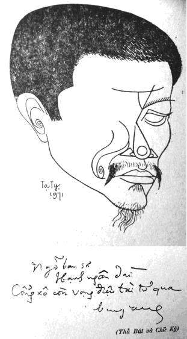

Sinh ngày: 17-12-1926 tại Quảng Nam

Bùi Giáng và thủ bút.
Tác phẩm:
1. Lá hoa cồn (Thơ)
2. Thi ca tư tưởng (Đi vào cõi thơ), Nhà xuất bản An Tiêm, 1969
3. Sa mạc phát tiết (Thơ), Nhà xuất bản An Tiêm, 1969
4. Martin Heidegger (Vấn đề căn bản của Siêu hình học), Nhà xuất bản Võ Tánh, 1969
5. Mùa thu trong thi ca (Tư tưởng và thơ), Nhà xuất bản An Tiêm, 1970
6. Sa mạc trường ca (Thơ), Nhà xuất bản An Tiêm, 1970
7. Ngày tháng ngao du, Nhà xuất bản An Tiêm, 1971
Bùi Giáng – người thi sĩ chối bỏ thi ca
Bùi Giáng (trung niên thi sĩ), thuở còn bé, ham đọc thơ. Bỏ học về nhà quê chăn trâu. Làm thật nhiều thơ, thân tặng chuồn chuồn và châu chấu.
Bùi Giáng đã tự giới thiệu với dòng chữ trên, được in ở mép bìa tập thơ Sa mạc phát tiết do nhà An Tiêm xuất bản năm 1969. Lời giới thiệu đó cũng là ý hướng tỏ bày quan niệm về chiều hướng thi ca của thi sĩ. Cõi sống này không làm gì còn ai, có ai biết và hiểu thơ nữa, nên người thơ đành gửi tinh hoa, huyết lệ mình cho đám côn trùng đồng nội! Mỉa mai thay, Bùi Giáng! Đi già nửa vòng đời với gần 30 năm đọc sách, làm thơ, để hôm nay nói lên lời cay độc! Bùi Giáng đã sử dụng cái tinh thể của ngôn ngữ để đạt tới thượng đỉnh của suy nghĩ, nhưng không cần ai biết suy nghĩ đó để làm gì? Thơ với Bùi Giáng, đích thực không phải cứu cánh, chỉ được thực hiện nhằm giải tỏa ám ảnh về thân phận trong vòng đai cuộc sống nhiều băn khoăn với ý thức siêu hình. Cái sa-mạc-cõi-đời-thế-giới-hôm-nay đầy ngụy trang, bất trắc. Nó u tối như vùng địa ngục, nếu không, cũng rừng rú man rợ, hỗn loạn trước mắt nhìn thi sĩ.
Bùi Giáng – người thơ, không ở trong trạng thái bình thường cả tâm hồn lẫn nghệ thuật. Sự đòi hỏi về mình, cho mình cái tuyệt đối trong sáng tạo là yếu tố căn bản cho mỗi cá nhân làm văn học, nghệ thuật. Tuyệt đối, con người từ vạn cổ đã đi tìm tuyệt đối. Nhưng tuyệt đối cũng như chân lý, chúng không phải vật thể để con người có thể dùng mắt nhìn, dùng tay sờ, dùng trực giác phán đoán và phân tích chúng qua suy luận. Tuyệt đối là vô hình, vô ảnh. Nó sống do mơ ước, cũng chết theo mơ ước! Cũng chính vì con người ham tìm tuyệt đối nên mới nảy sinh tiến bộ. Cái tuyệt đối biến mất, và trở thành tương đối lúc con người tưởng rằng đã tới nó. Vậy, cái điều thi nhân mơ ước giữa cõi Thơ, đi tìm tuyệt đối trong tư tưởng, ngôn ngữ, mãi mãi chỉ là thất bại! Điều này, khi luận về chữ "Đạo" Lão Tử đã nói:
…"Có một cái nó bao gồm hết thảy, nó sinh ra trước khi có Trời có Đất. Nó yên tĩnh biết bao! Nó trơ trọi biết bao! Nó đứng một mình và không thay đổi. Nó hồi chuyển về bản thể của nó không một chút nguy hại và nó là Mẹ của Vũ Trụ. Ta không biết tên nó, nên gọi nó là "Hành Lộ" là "Đường Đi"(the Path). Miễn cưỡng ta gọi nó là "Vô Cùng Tận" (the Infinite). Vô Cùng Tận là Phù Du (Fleeting); Phù Du là Tiêu Tán (the Vanishing); Tiêu Tán là Phản Hồi (the Reverting). Đạo ở "Thông Lộ" (Passage) hơn ở trong "Hành Lộ" (Path). Nó là tinh thần của "Vũ Trụ Biến Hóa", – sự sinh trưởng không ngừng luôn luôn quay trở về bản thể để sinh sản ra những hình thức mới. Nó cuộn mình lại như rồng, biểu tượng sở thích của môn đồ Đạo gia. Nó cuốn lại và tỏa ra như mây. Có thể ví Đạo như cuộc Biến Thiên Vĩ Đại. Theo chủ quan, nó là khí chất của Vũ Trụ. Tuyệt Đối của nó là Tương Đối…
(Trà đạo – Tiểu luận, trang 53-54, Okakura Kakuzo, Bảo Sơn dịch)
Thơ có phải là Đạo? Không, thơ không phải là Đạo nhưng nó sinh hoạt tương tự như Đạo, nghĩa là nó cũng đi tìm cái biến thiên vĩ đại trong cõi mông lung Trời Đất. Nó đi tìm niềm Tin trong mắt nhìn, hồn nghĩ. Cái niềm Tin đó không lệ thuộc vào nguyên tắc hay giáo lý của Đạo Pháp mà nó phiêu phiêu giữa ý thức của cá nhân, trong cái Nhìn và cái Nghĩ về Vũ Trụ đối chiếu với bản-thể-đời-sống. Người thơ vừa đóng vai Giáo Chủ vừa làm tín đồ ngoan đạo. Thơ, tiếng nói siêu ngôn ngữ. Cái giá trị mỹ cảm của nó, không lệ thuộc vào sự thẩm xét có tính cách thông thường mà thuộc về cái-gì-bền-bỉ và cao-đẹp-nhất của con người trong địa hạt suy tưởng. Thơ, không phải là cơ hội giải trí, nó có tính cách sùng mộ. Trong thi ca, cái đẹp không nhất thiết phải có Chân, có Thiện. Nó được quan niệm rộng rãi hơn, tự do hơn và vượt trên những thứ đó. Bởi vậy, sự dấn thân của thi nhân không phải để giành về phần mình những đặc ân, mà chính để ban phát đặc ân cho kẻ khác, còn mình chỉ thâu nhận khổ đau, khắc nghiệt.
Nói vậy, không hàm chứa ý nghĩa tuyệt đối của mỗi số phận thi nhân ở môi trường thi ca, mà nhằm tỏ bày ý niệm. Bùi Giáng, người làm thơ đã chối bỏ thi ca vì đã nhìn rõ cái mong manh của ngôn ngữ trước Định Mệnh và cõi Siêu Hình. Có lẽ, vì chịu ảnh hưởng quá nhiều các triết thuyết Tây phương và gần đây của Đông phương, nhất là giáo lý Phật giáo, nên người thơ đã đánh mất bản ngã, để chịu giày vò trong "vòng quay" của các nhà đại-tư-tưởng cả Đông lẫn Tây, làm cho ngơ ngác. Nhưng ác thay, cũng nhớ nó, để có vóc dáng đặc biệt Bùi Giáng hôm nay:
… Chân nhân đời xưa đưa ra một "chủ thuyết" nào đó, đều có như là tình phi đắc dĩ? Chẳng đừng được mà phải nói. Nói ra, mà vẫn có chỗ như là chẳng muốn nói ra.
Chẳng đừng được mà phải nói tới nhân nghĩa, lễ nghĩa, như Khổng Tử. Chẳng đừng được mà phải nói bỏ nhân nghĩa, lễ nghĩa đi, như Lão Tử. Chẳng đừng được mà viết Tề Vật Luận, như Trang Tử. Trang Tử thường dùng phép "Chi ngôn", ấy là bởi ông đứng ngay giữa cơn lốc của sự tình bất đắc dĩ: muốn gác bỏ chuyện thị phi, mà vẫn cứ bị bó buộc phải nêu mãi chuyện thị phi…
… Sau ba cái khối Khổng, Lão, Trang, tư tưởng Trung Hoa đã đi vào phiên nhiên trong cung bậc Đường Thi. Rồi nó kết tinh trong truyện Kiều của Nguyễn Du. Truyện Kiều là chỗ dung hợp của Khổng, Lão, Trang và Phật.
Người tư tưởng sẽ không còn dám viết gì về tư tưởng nữa. Trang Tử tái sinh sẽ nghĩ sao về cuốn Nam Hoa Kinh của ông? Ông sẽ viết một bộ Tân Nam Hoa Kinh, hay là ông hồn nhiên ngâm câu thơ Hồ Dzếnh?
"Thơ về nắng sáng lừng bay
Gấp đi ánh phượng cho ngày rạng ra".
Hoặc câu thơ của Xuân Diệu:
"Trưa hôm nay con ngồi như trẻ nhỏ
Giữa đáy trưa trong lòng mẹ vô cùng.
Con là sáo mẹ là ngàn vạn gió
Mẹ là trời con là hạt sương rung
Sương uống mãi chẳng bao giờ hết sáng
Của trời cao chói lọi mỗi triều ngày
Sáo ca mãi lòng tre run choáng váng
Gió vẫn đầy ngàn nội bốn phương bay"
Thơ như thế là cái chốn của "tâm vô thố hồ thị phi, hưu hồ thiên quân.
(Thi ca tư tưởng)
Chính vì say mê triết thuyết này nọ, nên Bùi Giáng bị ám ảnh đến nỗi nghi hoặc cả thi ca và càng lúc, càng đưa thi ca vào vùng trời u mặc để cười giỡn cho vui, vì đời là chiêm bao cả! Cái Có, cái Không, cái Còn, cái Mất hàm trong tinh thể của Tạo Hóa mà sức người không có cách nào làm cho lay động! Đúng, Bùi Giáng đã đi vào chiêm bao giữa cuộc sống vì cuộc sống vừa khủng khiếp vừa nên thơ, con người không thể dùng luận lý để biện minh phải trái. Nhưng dù nói gì mặc lòng, đích thực Bùi Giáng bị cái hàng rào triết học bủa vây thật chặt chẽ. Giả dụ, Bùi Giáng không đọc sách Triết, hoặc chú trọng tới vấn đề Siêu hình mà chỉ làm thơ thôi, chắc thơ Bùi Giáng không mang sắc thái độc đáo với tinh thần u mặc thâm thúy của Lão Tử, kèm theo đấy, nào Platon (triết gia Hy Lạp, môn đồ của Socrate và là thầy của Aristote), nào Parménide, Nietzsche, Dylan Thomas, Rilke, Hoelderlin, Baudelaire, v.v. là những khuôn mặt lớn của Tư Tưởng và Thi Ca Thế Giới để chứng tỏ khả năng hiểu biết của mình. Đôi lúc, người thơ cũng bị lôi cuốn vào khung trời quái dị qua hình ảnh "thiên tài đày đọa" Edgar Allan Poe, người đã có những tưởng tượng dị thường với cái nhìn ma quỷ, luôn luôn bị ám ảnh bởi các "thiên thần kỳ quái" trong kích thước văn nghệ quốc tế.
Thơ Bùi Giáng súc tích, chứa đựng nhiều u uẩn. Cái khung trời sáng láng, hiền hậu, chan hòa mơ ước phiêu bồng của buổi nào xa xôi, vẫn thấp thoáng hiện về trong thi nhân qua những vần điệu:
Rồi mai đi về xứ nào chẳng biết
Đỗ quang ôi và có lẽ quyên ôi
Đi lìa xa xứ sở của mặt trời
Thì chuyện cũ cũng như từng chưa biết…
Ngày mai, ôi! ngày mai khi con người lìa xa cuộc thế, khi mắt đã nhắm không còn nhìn thấy mặt trời cùng người quen, kẻ lạ, thì còn nói làm chi cũ, mới? Cái chết nào đó chết biết từ đâu tới làm mờ mịt cõi nhân gian! Nó làm người đi quên hết, quên "dấu tiên sa" và "đông tàn thu gãy", cả chút tình Đông Á cũng trôi vào về xứ nào mù thẳm, nhưng xin em, người yêu dấu, còn ở lại cõi đời cứ nô đùa, cười vui như chuyện qua rồi:
Tôi chẳng rõ cội nguồn tôi ly biệt
Dấu tiên sa và ngấn tích tiên nga
Bờ dạt bèo hay bến lạnh trôi hoa
Ngày ngóng mộng hay đêm chờ máu chảy
Xuân thơ dại hay đông tàn thu gãy
Chút tình xưa Đông Á mất đâu rồi
Rồi mai đi về xứ nào chẳng biết
Những người em hãy ở lại bên đời
Nô hay đùa xin cứ mỉm hai môi…
(Sa mạc phát tiết)
Sự đi, ở tùy số mệnh, nhưng người thơ sở dĩ phải nói ra để chứng tỏ, mình đã sẵn sàng chờ đón nó, không hề sợ hãi. Vì thế mỗi lời nói, mỗi chữ viết, mỗi ý nghĩ tuy cay đắng, nhưng vô cùng thành thực. Sống và chết, hai vấn đề cùng chung định lý: có sinh phải có tử. Vì ý thức rõ ràng, nên người thơ thung dung tỏ bày tâm sự:
"Thưa em rượu uống bây giờ
Là trăm năm gục hai bờ tử sinh…"
"Thưa em rượu uống bây giờ
Là thiên cổ lụy còn trơ bên mình…"
"Thưa em rượu uống bây giờ
Là trong lát nữa lên bờ đuổi ma…"
"Thưa em rượu uống bây giờ
Là thiên thu lại còn trơ hận trường…"
(Sa mạc phát tiết, Rượu uống)
Bài "Rượu uống" hàm chứa một ý tình tuy can đảm, nhưng quả thực thê lương. Nếu đời sống chỉ được sinh ra để chờ đợi cái chết, chắc chẳng còn ai muốn có mặt ở cõi đời này cho mệt xác. Mọi cuộc đua tranh, mọi cố gắng để làm cho cuộc sống mỗi ngày mỗi tốt đẹp hơn cũng là thừa. Nhưng may mắn thay, cái tinh thần hoài nghi và bi quan ấy không phải là giáo điều cho mỗi kiếp người. Nó chỉ được phát sinh trong một cảnh huống, một trạng thái bất thường của cá nhân thi sĩ. Có thể nó bi quan, yếm thế và người thơ cấu tạo cũng nhằm mục đích tác động riêng mình bằng buồn đau, giận hờn cho khuây khỏa xót thương. Sự chấp nhận hay không, thuộc quyền người thưởng ngoạn.
Con người cô đơn, mãi mãi cô đơn vì mỗi con người, tự nó đã là điều xa lạ. Chính vì mặc cảm cô đơn nên con người cảm thấy nhỏ bé trước rộng lớn của Vũ Trụ. Sự hiện hữu nào đó, có nghĩa gì đối với Sa-Mạc-Hư-vô? Con người sợ Hư Vô, nhưng vẫn muốn tìm hiểu Hư Vô là cái gì mà khiếp đảm thế? Con người phải dùng đến suy luận để giải đoán băn khoăn qua môn học Siêu Hình. Đã bao nhiêu thế kỷ, qua nhiều công khó tìm tòi nghiên cứu mong đem lại một định nghĩa rõ ràng, để ấn định minh bạch cương vị con người và linh hồn trước Vũ Trụ. Nhưng cho tới nay, hình như các nhà đại-tư-tưởng vẫn chỉ đưa ra những nguyên cớ siêu hình mà chưa đạt tới cái tinh thể siêu hình tức là giá trị tâm linh và chu kỳ con người trước Hư-Không-Tuyệt-Đối. Bởi vậy, Bùi Giáng khuyên mọi người đừng nói làm gì đến giao hưởng, đến Tồn Tại và Hư Vô. Bận tâm làm gì cái Nếp Gấp Siêu Hình "bất khả tư nghị" trong Sein und Zeit, trong Holzwege hoặc trong Der Satz vom Grund. Sống trong cái cõi "tư lự dị thường đó" mệt lắm! Nó trừu tượng quá. Nó bao trùm mọi sinh hoạt tâm tư và ngoại giới, ngay cả ngôn ngữ nữa. Cái sa mạc Chân-Không-Tịch-Mịch chắn ngang tầm suy nghĩ đã có đủ những đau đớn rồi đó. Ngay cả Heidegger, một trong những triết gia đã cấu tạo nên triết thuyết Hiện Sinh, một nhà Đại-Tư-Tưởng chẳng những của Đức Quốc mà còn của thế giới nữa, người đã mở ra được một chân trời siêu hình rộng rãi nhất, nhưng từ xa, con người u mê đứng ngắm mãi vẫn chẳng thấy vóc dáng mình đâu! Bùi Giáng cũng đề cập đến vấn đề căn bản của Siêu Hình Học qua Heidegger mà người thơ đã chịu ảnh hưởng nhiều trong ý hướng thi ca. Điều này, trái ngược hẳn với Nguyên Sa, học Triết và dạy Triết, nhưng làm thơ rất trữ tình, không để lộ chút gì dính dấp giữa thi ca và triết học. Có lẽ Nguyên Sa đã quan niệm rõ ràng, mục đích của triết học là đi tìm cái nguyên nhân đầu tiên còn nghệ thuật là sáng tạo và phát huy chăng?
Bùi Giáng đi vào trời Thơ như một trận hiện diện dị thường trong khiếm diện, gây nên một tình tự vừa hoang vắng vừa chan hòa, một khuyết phạp thường hằng lại để mọc ra sum suê những lá cây viên mãn cứ xô ùa nhau đụng mãi:
Hồn tại thể tan lìa trong điệu ấy
Vâng là rằng không ấy phủ mây xuân
Núi bất tuyệt mưa đầu truông phượng dậy
Bước lên miền lũng thẳm bạch dương thân
Cỏ phát tiết bờ khơi sông dẫn sóng
Biển lên trời đầu ngọn mở nghe chim
Đất từ tạ Lam Kiều ngân nguyệt vọng
Nắm xuân xanh về giữa tối khuya tìm…
Ngôn ngữ trong thơ Bùi Giáng đi vào cõi suy tưởng. Ở đấy, người thơ như bị cấu xé giữa Thực và Mộng. Tiếng thơ buồn bay lang thang trong vòm cong trí tuệ để bất chợt vượt thoát ra khỏi kiềm tỏa tung vào quỹ đạo dự ước, trong tâm cảm người thơ. Giữa cái say sưa vô độ, linh hồn bay lả lả, ngất ngất trong cõi rộng rinh ảo tưởng. Nó là một tư lường không định trước. Từ một khắc khoải đơn sơ đi vào thênh thang mộng mị đầy hào quang diễm lệ:
… Khung cảnh hẹp tờ bay trong mấy ngón
Chết là gieo vàng lộn mấy phen rồi
Sầu nhan sắc đèn lay trong mấy ngọn
Đến năm sau chờ buổi trước không lời
Nhưng màu lá nhớ màu cây đầu ngõ
Thị thành vui gì sắp sửa sang đèo
Gió khuyến khích trong dập dồn hiểm họa
Hồn thu phong trường kiếm dựng cho bèo…
(Sa mạc phát tiết, Phát tiết)
Cuộc sống là trò chơi, thay đổi bất tường trong mỗi giờ phút, nhan sắc chỉ là hư ảnh, cũng như dấu bèo in trên mặt nước làm uổng đi cái khí phách "thu phong trường kiếm". Chết là gieo vàng, là luân hồi tiền kiếp mấy phen rồi sinh tử? Vì:
Con chim sầu tuyết băng nguồn
Mở heo hút cỏ phơi truồng đá xanh
Trên vòm thời đại đi quanh
Rách quần quỹ đạo tan vành nguyệt hoa…
(Sa mạc phát tiết)
Bùi Giáng đã thấy rõ thân phận mình với chu kỳ góp mặt và thấp thoáng cõi hư vô mở rộng bát ngát làm choáng váng mặt mày. Để chứng minh sự có đấy, Bùi Giáng luôn luôn đòi hỏi về phần mình cái nguyên cớ đầu tiên của lẽ sinh tồn, giữa vũ trụ thuần nhất, bất khả phân, bất biến của Aristote. Cái cõi vô hình, vô ảnh nó làm thi nhân cảm thấy thương thật đấy, nhưng nó là vùng sa-mạc-hoang-liêu chẳng ngào ngạt hương hoa và chất ngất mến thương. Giữa ý nghĩ mơ hồ của tiềm thức, chợt nở lên đóa hoa tâm ý: tình yêu và thương tiếc, cả hai vòng tử sinh quấn quít, như tinh thể giao hòa cùng bản thể giữa vòm trời hiền hậu:
Vì ảo mộng ở chân mình đi tới
Bước chân trời muôn hướng gọi mây xanh
Nên mùa nọ đường nằm canh ngõ lội
Đến tìm nhau ở dưới bóng thiên tài
…
Em gục khóc, em mỉm cười với mộng
Với môi răng và khóe hạnh mày ngài
Với dáng dấp tuổi rằm trăng lay động
Sầu nguyên tiêu tư lự nước trôi dài…
(Sa mạc phát tiết, Dặm mòn, LHC)
Tự cổ, mối sầu có cùng với bao niềm ăn năn vì đã trót làm kiếp thi nhân. Con người đi từ cuộc sống vào chiêm bao hay trái lại, nhưng trong địa hạt thi ca đích thực con người đi tìm đau khổ và thất bại! Cái vùng trời Siêu-Thoát, cái Sa-Mạc-Hư-Không mà người thơ thong dong bước vào, mong tìm thấy chân lý, chao ôi! nào ngờ phải gặp lại tiền kiếp hoang vu, cùng với bàng hoàng, điên điên tỉnh tỉnh, mập mờ không phân định. Nó là Vô Thường đó! Một khi đối diện với nó, ở trong nó rồi thì không còn chi thắc mắc, không còn gì thiết tha, ân cần, vồ vập.
… Nếu giả sử mùa xuân thu lại căn cơ thiết lập mọi cuộc cơn tồn sinh tồn hoạt, thì cái sự vụ bàn hư luận tới nó, có thật là thập phân tầm phào lẩn thẩn? Không còn dâu biển thì mất luôn cả trường sinh tử diệt phù du? Mọi mọi mất hết cả, thì còn lại riêng một cái chi? Mọi mọi mất đi, chẳng lẽ duy chỉ còn riêng Cô Em Mọi Nhỏ? Hỡi ôi!…
(Mùa thu trong thi ca)
Bùi Giáng đi vào thơ, luôn luôn đeo bên mình niềm ám ảnh của thần học để giãy giụa trong đó với băn khoăn, tuy trong thâm tâm, một thoáng nào đó, cũng muốn buông xuôi cho nhẹ nợ. Bùi Giáng đối thoại với Nietzsche, Sophocole, Parménide, Khổng Tử, Lão Tử, Sartre, Camus, v.v. lại còn trò chuyện với Brigitte Bardot, với Marylin Monroe, cô đào chiếu bóng đã tự tử ở bên trời Mỹ quốc năm nào, và cô em Mọi nhỏ cùng "Phùng Khánh mẫu thân" nữa:
… Nhiều người hỏi tôi có quả Phùng Khánh đã có đẻ tôi ra đời chăng. Bà đẻ tôi ra lúc nào?
Sự thật là Phùng Khánh chẳng hề có đẻ ra tôi một phen nào cả. Tôi nay bốn mươi bốn tuổi đầu. Phùng Khánh chỉ mới hai mươi sáu tuổi. Làm sao một thiếu nữ hai mươi sáu tuổi lại có thể đẻ ra một ông cụ luống tuổi bốn mươi bốn, bốn mươi lăm?…
… Thế thì bởi đâu Phùng Khánh lại là mẫu thân của tôi mặc dù bà không đẻ ra tôi? Ấy là bởi cái đường tơ luận lý học như thế này: Phùng Khánh vốn là bà mẹ Việt Nam. Vậy tất nhiên Phùng Khánh là mẹ của tôi vậy. Nếu tôi không nhận Phùng Khánh là mẹ, thì chẳng ra tôi là người nào? Hoặc người Cao Miên. Hoặc con dân Âu Mỹ ư?… Huống nữa là: Phùng Khánh là bà mẹ của loài người. Tôi là con người. Vậy Phùng Khánh là mẹ của tôi. Nếu tôi không phải là con của Phùng Khánh, thì chẳng ra tôi chẳng phải là con người? Chẳng ra tôi là con vật?
Phân tích nghiêm mật luận lý học ra như thế, rành rành Phùng Khánh là Mẹ của tôi.
… Mỗi khi tôi mơ màng nghĩ tới dung nghi diễm lệ Phùng Khánh thì dòng thơ bát ngát lại tuôn ra ào ào. Vậy thì hiển nhiên tài của tôi là do liên tồn Phùng Khánh đẻ ra vậy…
(Thi ca tư tưởng)
Người thơ đã sử dụng luận lý học để giải thích về "mẫu thân Phùng Khánh". Nó thật hay đùa? Nó là chiêm bao hay thực tại? Nó là sự mất thăng bằng trí não hay công việc thuần túy của luận lý học? Sự vụ này lạc quan hay bi quan? Là thất bại hay hy vọng? Dù nó là gì đi nữa, ít nhất, thi sĩ cũng đưa ra một mẫu người để bấu víu vào mà lý luận qua thi ca cho đỡ buồn, cũng như Nietzsche đã dùng Zarathoustra để khai triển thuyết siêu nhân và ý lực của quyền uy, qua tập văn vần trong khung trời triết học Tây phương. Mục đích và giá trị tuy khác nhau nhưng ý hướng là một.
Có người cho rằng, Bùi Giáng lập dị. Có người nói, vì mất thăng bằng trí não nên thi nhân mới nảy sinh ý nghĩ bất bình thường qua ngôn ngữ thi ca. Bệnh hoạn, điều may mắn hay bất hạnh cho mỗi con người làm văn học, nghệ thuật? Nếu không vì bệnh hoạn, làm sao Hàn Mặc Tử có thể chuốt sáng trời thơ Việt Nam qua ngôn ngữ thống thiết, nghẹn ngào. Tiếng thơ Hàn Mặc Tử kêu khóc không thôi từ mấy chục năm rồi đó! Cái vừng trăng lạnh lẽo mơ hồ lần quanh trái đất với chu kỳ đều đặn kia, đã dìm chết thi hào Lý Bạch dưới đáy nước đêm nào với cơn say chưa dứt. Nó còn làm thể xác Hàn Mặc Tử đớn đau đến tột độ, mỗi lần nó "lên ngôi" nên tự đáy lòng người thơ bật lên vần điệu vừa ghê rợn vừa nguy nga:
Gió rít từng cao trăng ngã ngửa
Vỡ tan tành vũng đọng vàng khô
Ta nằm trong vũng trăng đêm ấy
Sáng dậy điên cuồng mửa máu ra…
(Say trăng, Hàn Mặc Tử)
Và thi nhân đã hơn một lần, xin chị Hằng tha thứ cho bàn tay tội lỗi của mình đã kẻ lên trăng những ngôn từ si mê, cuồng dại! Cái khuôn mặt xanh xao ấy, tạo nên bao nhiêu mộng mơ cho kiếp làm thơ? Vùng ánh sáng mát dịu chảy từ trời cao đối với thi nhân là mơ, là mộng, là nguồn yêu thương vô lượng. Giữa cõi thinh không mù khơi, dòng Ngân Hà xa xôi quá, các vì tinh tú lạnh lẽo quá, không làm cõi nhân gian ấm áp hằng đêm, chỉ có vầng trăng treo lơ lửng với bí mật quyến rũ qua trí tưởng tượng của thi nhân mà thôi. Nhưng đau thay, khoa học đã làm trăng mất hẳn nét thiêng liêng từ khi có bàn chân nhân thế bước chậm chạp trên thân thể chị Hằng và còn để lại dấu tích đến bao lâu nữa?…
Bích Khê cũng vì bệnh lao, tạo nên tập Tinh huyết. Phạm Hầu, họa sĩ kiêm thi sĩ, chết vì bệnh thần kinh tại nhà thương Vôi (Bắc Giang) cách đây mấy chục năm, cũng để lại ít bài thơ bất hủ. Vậy, bệnh hoạn đâu phải là một đọa đày toàn diện cho mỗi số phận tài hoa? Cái thân xác đầy tội lỗi, nhơ nhớp có đáng gì, mà phải quan tâm. Người thơ bước trên mặt trái đất nhưng tâm hồn bay bổng giữa thinh không. Một khung trời sáng tạo chói lói có muôn vạn ánh hào quang rực rỡ – vì mặt trời thì bị nhân gian hãm giữa trái tim – để rọi vào hố thẳm nhân gian từng ý nghĩ tuyệt vời, diễm lệ. Bùi Giáng làm thơ, nhưng chẳng bao giờ thừa nhận thi ca là lẽ sống duy nhất của đời mình. Người thơ coi kiếp sống như một hiện hữu bất đắc dĩ, nên làm thơ cho khuây khỏa ám ảnh, cái ám ảnh thực sâu đậm, bi thương giữa cõi đời hỗn mang và suy tưởng thuần khiết. Bùi Giáng cho rằng, con người đã đánh mất cái nghĩa thiêng liêng của nó rồi. Nó không còn linh hồn nữa. Nó được chỉ huy và phán xét bằng ước lệ. Nó tàn nhẫn, độc ác ngay với chính nó. Thời đại hôm nay đã in đậm vết tích rừng rú với hổ, báo, heo, v.v, Con người biến thành dã nhân tự bao giờ chẳng biết! Bùi Giáng thoát hồn vào ảo giác để nhận ra sự thật:
Trần gian rộng rộng hơn nhiều nữa
Mênh mông hơn và bát ngát mây hơn
Thì thua kém hay so le tàn úa
Thì thế thôi giới luật cũng phiêu bồng
Một mây chiều nguyệt có khổ buồn không?
(Mùa thu trong thi ca, Vì như vậy)
Thua kém, so le, tàn úa cũng vậy cả thôi. Cái phù du mệnh số đi song hàng với rộng rộng trần gian thì con người lấy gì để cưỡng chống, lấy gì để sinh tồn qua kiếp trăm năm? Và Thượng Đế kia, Đấng Tối Cao, Tối Linh mà con người hằng kính cẩn, liệu có còn giữ nguyên tín mộ?
Hỏi: Tại sao các hạ tin rằng có Thượng Đế?
Đáp: Bởi vì nếu không tin là có, ắt phải tin rằng không có, mà hễ tin là không có, ắt thời gian phong cảnh sẽ hoang liêu. Mọi "dưỡng chất trần gian" ắt sẽ do sa mạc cung cấp. àm sao chịu đựng nổi sự tình đó? Uống một chai la-de, mà nghĩ rằng đó là của cải do hư vô ban cho, thì hỡi ôi! Làm sao còn sum suê uống ăn nhậu nhẹt thơ mộng được nữa. Tuy nhiên…
Hỏi: Tuy nhiên thế nào?
Đáp: Tuy nhiên tại hạ thỉnh thoảng cũng đánh mất Thượng Đế.
Hỏi: Thỉnh thoảng đánh mất như thế nào?
Đáp: Như trường hợp chán chường một cách đột ngột không còn muốn uống la-de.
Hỏi: Hoặc như thế nào nữa?
Đáp: Hoặc như trường hợp đọc sách vũ hiệp tới chương kết thúc.
Hỏi: Vì sao như thế?
Đáp: Vì kết thúc, thì tức nhiên là chấm dứt hết mọi miền cõi liên tồn. Còn biết lấy đâu mà đeo đuổi chiêm bao được nữa. Hỡi ơi! Đến sách vũ hiệp mà cũng kết thúc, thì Trời Xanh Thượng Đế cũng thi đua nhau tử vong, tiêu tán tuốt hết cả ngấn tích di hài…
(Mùa thu trong thi ca, Vấn đáp)
Hình như, không cách nào Bùi Giáng kinh qua được cái gốc suy luận về Siêu Hình. Luôn luôn người thơ đặt cho mình mối băn khoăn về cái Còn, cái Mất. Đi từ vật thể qua tinh thể đến khách thể rồi chủ thể, sự gì cũng tiêu tan trước Hư Không làm người thơ chán mỏi:
Bây giờ ai biết hỏi ai
Dù lòng biển rộng sông dài thênh thênh…
Cái cõi thơ trinh nguyên, đôn hậu mà tự cổ các thi nhân thường nhìn vào đấy, coi như cứu cánh, nó đã xa vời, chìm khuất. Bùi Giáng thường gặp mình, giữa hồn mình. Cô đơn và cô đơn trước bạt ngàn vướng mắc. Mảnh trời xanh kia, trái đất hệ lụy này và kiếp sống bọt bèo như mối vấn vương làm người thơ khắc khoải, trốn mình trong đường mòn suy tưởng. Nhưng suy tưởng chỉ dẫn vào tuyệt lộ trước Hư Vô. Sợ quá, người thơ ôm đầu nức nở. Những mơ ước nào đó, những khát vọng rồ dại nào đó, cũng chỉ để đi tới đỉnh nhọn của chán chường! Nào có gì đâu? Nào còn gì đâu? Một chu kỳ ngắn ngủi, một góp mặt vô danh, một ganh đua vô ích. Trời thì lãng quên, Đất lại vô tình. Ta hiện hữu hay ta thừa thãi cùng nghĩa, vì cát bụi lại trở về cát bụi! Thơ Bùi Giáng, có nhiều bài đọc nghe vui vui, nhưng nếu tìm hiểu sâu xa, phân tích kỹ, nó vẫn chứa đựng trọn vẹn những nỗi niềm bi đát: nào tình yêu vọng tưởng qua vóc dáng mẫu thân Phùng Khánh, nào "dồn nén" qua nuồng Mọi Cao Nguyên, với vú đồi căng mộng Monroe, Bardot, v.v. Không biết cái tình này có nằm trong diễn trình Phân Tâm Học của Freud không? Nó là "Es" (Bản Ngã) qua "Ich" (Cá Ngã)? Nó đã được Ueberich (Thượng Ngã) kiểm soát chưa?
Người con gái lội qua khe
Bàn chân với nước lạnh đè lên nhau
Nỗi niềm tưởng lại xưa sau
Bàn chân với nước cùng nhau lại đè.
(Sa mạc phát tiết, Bàn chân với nước, LH)
Thơ Bùi Giáng mang nhiều ẩn dụ ở chiều sâu ngôn ngữ. Lời thơ tuy đơn sơ, ý thơ tuy thanh thoát, nhưng tâm trạng chắc gì xuôi mái? Thư gửi nương tử Monroe là hình thức u mặc hay chứa chấp mối ẩn ức?
Ngày nương tử còn bình sinh cuộc sống, tại hạ vốn có phen một đôi lần đôi lúc nằm ngủ chiêm bao thấy nương tử ghé về thăm nước Việt. Nương tử đưa bàn tay mềm mại nắm lấy cái hình hài xương xẩu của tại hạ, rồi ẵm bổng tại hạ ở trong lòng lộng bát ngát vô biên của liên tồn nương tử… Trong lúc nằm khoanh tròn ở trong lòng nương tử, tại hạ có sờ nhè nhẹ (sẹ sẹ) vào chỗ rốn của nương tử, thì cảm thấy một mối sung sướng siêu phàm. Nhưng mà bỗng nhiên lúc bấy giờ nương tử thét lên tiếng "Chao ôi! Nhột quá, nhột quá". Đồng thời nương tử vung hai cánh tay, thì tại hạ té lăn nhào xuống đất, giữa một thửa ruộng bùn lầy…
(Mùa thu trong thi ca)
Lá thư viết với ý nghĩ thật ngộ nghĩnh. Bùi Giáng viết đùa, nhưng cũng có phần thực nằm trong dục tính của thi nhân. Bùi Giáng đùa qua triết học, đùa với nhiều nhân vật siêu phàm chứ chẳng riêng gì nàng Monroe. Có khác, ở mỗi người, thi nhân đùa mỗi cách. Đây có lẽ, một phương pháp dùng để tạm trốn mình chốc lát vì suy nghĩ và làm thơ khổ quá!
Bùi Giáng làm nhiều thứ thơ lắm. Ngoài thơ Việt, còn thơ Pháp và Anh cũng như chữ Nho viết bằng quốc ngữ nữa. Có thể nói, không thi sĩ nào làm nhiều thơ bằng Bùi Giáng. Nhiều ở đây, không phải tất cả, cũng không có nghĩa toàn bích, mà chỉ để chứng minh sức sáng tạo rất phong phú của thi nhân. Cái cõi thơ đích thực Bùi Giáng hằng nguyện cầu và mơ ước nó vẫn mênh mang dâu bể, bát ngát ở đầu bến Mê, với bóng dáng chàng nghệ sĩ phiêu đãng Gaugin:
Ngài đã gặp tượng đá kia của đá
Một hoàng hôn hồn lữ thứ tiêu tao
Ngài đã thử trao cho ngàn cây lá
Gọi chim bay về mỉm miệng cười chào
Ngài đã định một lần kia thư thả
Dưới trăng rằm vô định tuyệt tăm hơi
Mở ngọn cỏ tìm vết chân hội họa
Giấu quan san liều một trận không lời
Ngài bắt gặp một lần kia xứ lạ
Nước mênh mông hồ hải mộng xanh trời
Ngài đã vạch một ngân hà óng ả
Cho tinh kỳ du ngoạn giữa kim bôi
Và tinh sương thấp thoáng lấp chôn rồi…
(Sa mạc phát tiết)
Gaugin (1848-1903), nhà danh họa thuộc phái Dã Thú (Fauvisme) đã bỏ nước Pháp qua đảo Tahiti để làm hội họa. Gaugin kẻ đam mê chẳng những màu sắc, còn ma túy và tình yêu nhục thể. Gaugin, nghệ sĩ trên nghệ sĩ, dấn thân để tìm về cho mình chân trời sáng tạo mới và cuối cùng đã bất tử trong địa hạt nghệ thuật tạo hình thế giới. Người thơ cũng muốn làm cuộc lãng du để mong gặp được chân trời mới trong trí tưởng, nhưng ở cương vị của người thơ bé nhỏ và hiền lành trước cuộc sống Việt Nam, đành gửi hồn qua vóc dáng Gaugin với hàng hàng tưởng niệm!
Thơ Bùi Giáng không có chiều hướng rõ rệt ở mỗi giai đoạn. Nó được cấu tạo miên man, tùy hứng. Nó tự do tuyệt đối. Người thơ là ông Hoàng, là Lãnh chúa trong địa hạt thuộc riêng mình. Bởi vậy, trong mỗi tác phẩm, đều có phần của tác phẩm khác. Nó giao hòa trong mọi chiều tư tưởng để hình thành dòng thơ đặc biệt Bùi Giáng. Người thơ quyết định hết và chịu toàn trách nhiệm. Bùi Giáng sáng tác không cần đắn đo hơn thiệt trong mỗi bài, mỗi ý. Thơ Bùi Giáng tựa như cơn gió, lúc tản mác thổi dịu nhẹ mơn man da thịt, khi tập trung từ xa tắp không gian, cuốn thành cơn lốc quét từng luồng giận dữ làm đổ vỡ, xiêu dạt trần gian.
Viết về thơ Bùi Giáng, nên hệ-thống-hóa hoặc phân loại một cách thông thường tức là giết người thơ vậy, vì Bùi Giáng không chỉ làm thơ với ý nghĩa chung chung, mà đích thực người thơ dùng thi ca để chuyên chở tư tưởng và phô diễn những trạng thái phức tạp nảy sinh giữa cõi lòng chứa chấp nhiều hệ lụy.
Người thưởng ngoạn thơ cũng vậy, thích thì đọc, nếu không, cứ việc vứt xuống bất kỳ chỗ nào. Bùi Giáng làm thơ cho mình, nhưng tại đời. Cuộc đời chán quá! Công danh, phú quý là cái gì đâu, làm con người ham hố đến quên cả chức phận thiêng liêng mà Đấng Tối Cao ban riêng cho loài người, đó là một linh hồn thuần khiết để hướng vào Chân, Thiện, Mỹ. Người thơ u uẩn đi vào cõi Tịch Mịch. Bùi Giáng làm thơ thật tự nhiên không kiểu cách, gò bó, dù đôi chỗ để lộ ý kiêu bạc ngay cả với mình:
Hãy mang tôi tới giữa đời
Giết tôi chết giữa cõi đời mốc meo
Hãy mang tôi tới nắng chiều
Giết tôi chết giữa một chiều khe nương
Hãy mang tôi tới dặm trường
Giết tôi chết giữa con đường bơ vơ
Hãy mang tôi tới bất ngờ
Giết tôi ngẫu nhĩ trong giờ ngẫu nhiên
Hãy mang tôi tới diện tiền
Giết tôi chết giữa người thuyền quyên kia.
(Sa mạc trường ca, Cầu nguyện ca)
Giết tôi, hãy giết tôi trong những điều kiện do tôi mong muốn và tự nguyện. Một cuộc đời mốc meo, nhàm chán, một khe mương dơ dáy, một dặm trường bơ vơ và một ngẫu nhiên nào đó, hay giữa tôi và thuyền quyên đang "diện tiền" góp vui, thì cái chết đó cũng là điều thú vị lắm chứ? Cái chết rất triết học vì với triết học người ta chẳng có chơi một cơn, đùa một cuộc, nhảy múa một vòng, vậy cái chết do thi nhân mong muốn cũng chỉ như một nuôi dưỡng sinh tồn quẩn quanh giữa suy tư và cõi đời chán mỏi mà thôi!…
Bùi Giáng là một hiện tượng. Người yêu thơ phải nhìn Bùi Giáng qua phong cách độc đáo, ở đấy, mỗi dòng, mỗi chữ, mỗi ý, được viết ra là máu thịt của thi nhân dâng hiến cho đời. Thơ Bùi Giáng không thuộc môn phái nào hết. Nó không cũ, chẳng mới. Nó có thể là thơ, là tư tưởng, đôi khi thơ và tư tưởng lẫn lộn giao hòa tạo thành một vùng "mờ mịt thức mây". Thơ Bùi Giáng như cơn đau chưa dứt, như nỗi bàng hoàng chiêm bao chợt tỉnh, để rồi lại chìm vào chiêm bao khác. Nó bâng khuâng ở mỗi vần, mỗi chữ. Có lúc, nó buồn bã như niềm tuyệt vọng! Người yêu thơ cứ phải men lần theo, như đi trên một hành lang trú ngụ nhiều điều bí mật. Mỗi khúc quanh lại mở ra những kỳ dị phi thường. Cái trạng thái hỗn mang này Hàn Mặc Tử đã thấy:
Bây giờ tôi dại tôi điên
Chắp tay tôi lạy cả miền không gian…
Kể từ năm 1924, André Breton và một số nhà thơ tiến bộ đồng ký tên vào bản tuyên ngôn, chính thức khai trương trường Siêu Thực giữa vòm trời thi ca Lãng Mạn Tây Phương. Cũng kể từ đó, khuôn mặt thi ca thế giới đổi thay. Thơ đã có một ngôi vị cao hơn trong ước lệ xã hội. Thơ vượt thoát dần dần mọi quy luật và đồng thời cởi bỏ những ràng buộc quá chặt chẽ và phi lý trong vần điệu, ngôn từ. Ở Việt Nam, thi sĩ Thanh Tâm Tuyền cũng đưa ra một quan niệm về thi ca, tuy không phải bản tuyên ngôn về thơ mới, nhưng nội dung bản văn cũng tóm lược đầy đủ chủ điểm của vấn đề:
… Người thơ hôm nay quan niệm rằng: người ta có thể viết những bài thơ có vần điệu, nhưng người ta không biết làm thơ… Trong thơ hôm nay có một số tiếng bỗng mất tích, một số khác biến dạng và vô số những tiếng lạ xuất hiện làm nên cái thế giới riêng. Cái thế giới ấy quá kỳ quái với người đọc, người ta không hề quen thuộc, chưa nghe nói tới và ngỡ mình lạc vào một tinh cầu khác. Thơ hôm nay là một tinh cầu biệt lập với thơ hôm qua. Người ta không tìm thấy trên tinh cầu này những cảnh tượng, những sự vật trong trí người ta vẫn coi là vĩnh viễn không đổi dời của thơ. Trong thơ hôm nay không còn những bông hoa kiều diễm, những đêm trăng huyền ảo, những buổi chiều bâng khuâng, những mối tình thơ mộng dù tan vỡ, những nhớ nhung cách trở tự nhiên, những khúc đàn ca nhịp nhàng, người kỹ nữ bên Tầm Dương, tà áo tha thướt trong ánh nắng, mùa xuân với giọng chim ca, mùa thu trong lá vàng, những cơn mưa buồn hiu hắt không thôi, cái tâm hồn của ngàn đời còn run hoài chưa hết những đau thương vỡ mộng, thoáng qua của một hình bóng, một cơn gió, một bóng mây…
… Trong thơ hôm nay, người ta lạc vào cái thế giới có những đêm tối nghẹn ngào, những ánh sáng của lộ liễu, những bệnh viện lạnh lẽo, những nấm mộ hoang vu, những thành phố đổ nát không chim muông, chỉ những gạch ngói, những nỗi lặng câm khắc khoải, những cặp mắt đen cú vọ, những hoảng kinh xô đẩy của loài cầm thú trốn chạy thiên tai, những mối tuyệt vọng sâu thẳm không được cứu vớt, những hồn chết dần trong thèm khát tương lai, những ràng buộc vô lý vào cuộc đời lạ mặt với đám đông ồn ào nhung nhúc, những tầm thường khổ đau gọi ra tên tuổi, cái tâm hồn hôm nay chịu vùi dập bởi những khốn nạn tang thương đòi giải phóng ngay chính ở hiện tại…
… Trong thơ hôm nay hoặc là thiên nhiên không được nhắc đến nhường chỗ cho những vỉa hè, cột đèn, gạch ngói, khối sắt, khối thép, da thịt, tay chân, mặt mũi hoặc là hiện ra thản nhiên lạnh lùng khó chịu nếu không muốn nhập với một ý thức…
(Nỗi buồn trong thơ hôm nay)
Trên đây, chỉ tóm lược ý chính của bài văn, nhưng cũng đủ chứng minh sự dứt khoát của Thanh Tâm Tuyền trong vấn đề thi ca. Bùi Giáng không nói gì cả, nhưng toàn bộ thi phẩm của Bùi Giáng đã khơi động một trời thơ rộng rinh, bát ngát. Thi nhân không dấn thân vào đâu hết, coi cuộc đời như cõi rong chơi tạm bợ. Làm thơ cũng là một cách rong chơi cho quên đi từng đắn đo, phiền muộn! Bùi Giáng đi vào thơ như đi vào cõi vô định. Không có chọn lựa hay thử thách, chỉ có xúc cảm và ngôn ngữ giao thoa, diễn đạt những gì ám ảnh trong hồn. Với từng bước khoảng khoát nhưng rất ưu tư, người thơ đăm đăm ngó về phía trước qua sự tàn phai của vật giới trong cái bất diệt của Tạo Hóa:
Mây năm sắc giăng sông mười sáu
Tuổi mười lăm đổ máu ấu thơ
Tin vui giục giã hai bờ
Mỗi buồn chết gục từng giờ đi qua…
(Sa mạc thi ca, Xuân)
Thời gian, ai cũng sợ nó. Sáng, trưa, chiều, tối, cái nhịp đi rất êm nhưng vô cùng nghiệt ngã làm chia lìa tất cả:
Nằm xuống đất bất bình một lúc
Chợt nghe ra từng phút đang trôi
Sát na gây cấn hồi lời
Xin thâm tạ đất và trời xa nhau.
(Sa mạc thi ca, Một tấm áo)
Đất trời xa nhau đành một lẽ. Nó là cái xa của vũ trụ bất biến tự cõi vô cùng, trời đất vẫn quấn quít luân chuyển bồi hồi trong vòng ảnh hưởng lẫn nhau. Nhưng cái xa của con người và cuộc sống, cái bất lực của chủ thể và Hư-Không-Tuyệt-Đối, sự vụ đó mới thật đau thương! Cái nên thơ của Horace trong thi ca với quan niệm Thượng Đế là thuần nhất, chân lý cũng thuần nhất hình như cũng phôi pha theo năm tháng, với bao nhiêu tìm tòi của nhiều thế hệ qua nhiều triết thuyết. Một vùng Chân-Không-Tịch-Mịch còn đó, dù cho tinh lực của đời sống (force vitale) có là căn bản thiết yếu cho mọi sinh hoạt tinh thần hay vật chất, dù nó là yếu tố sinh tồn cho mọi chu kỳ nhân loại, nó vẫn thuộc về trừu tượng. Đời sống cho đi hay giữ lại cũng chẳng có cách nào ra thoát khỏi vòng "tử sinh hữu mệnh". Vì ham tuyệt đối của suy nghĩ nên Bùi Giáng thường tỏ ý buồn phiền về hai danh từ thực mênh mông và bi đát: Thực-Tại với Hư-Không. Nó là đám rong rêu bám chặt vào chiếc sọ suy tư, nó đẩy thi nhân vào vùng sương mù dày đặc. Người thơ đưa tay quờ quạng lần đường, và cuối cùng phải trông cậy vào niềm tin để khai thông mê lộ qua bài thơ Chấp trước:
Không trước đông thì trước tây
Không trước cây thì trước lá
Không trước ma đầu gió thì trước quỷ cuối sương
Không trước thiên đường thì trước Ba La Mật
Không trước thật thì trước hư
Không trước hư thì trước hữu…
Bài thơ gồm 29 chữ không ở đầu mỗi câu. Không cái nọ thì cái kia, không người này thì người khác, có nghĩa là khi ta góp hơi thở thứ nhất, đời sống đã có sẵn những phiền lụy và cảnh huống vây quanh, vậy "cố chấp" làm gì trước sự kiện đã rành rành như vậy? Tại sao không kinh qua, không vượt lên để giải tỏa kềm hãm, để tìm đến cõi tịnh độ lâng lâng? Lời than thở choáng váng của Chúa Jésus trên đỉnh Golgotha hay lời từ bi của Đức Phật dưới cội Bồ Đề, muôn đời vẫn là sự "thấu suốt cơ cực trần gian" trong vòng tay độ lượng. Vì thế, trước cuộc đời, Bùi Giáng chẳng cần tỏ bày thái độ, cứ dửng dưng sống theo ý mình, thả tâm hồn vào cõi đẩy đưa tới đâu cũng được! Chuyện đời dù ngàn năm trước, trăm năm sau, hay bây giờ cũng vậy thôi! Nếu đôi khi dáng dấp cuộc đời có được người thơ nghĩ đến, cũng chỉ có nghĩa như nói đến trò chơi cút bắt có đấy. Hãy cứ vui đùa cho nhẹ bớt buồn thương. Phẫn nộ hoặc nguyền rủa xã hội là điều vô ích! Ngay cả chiến tranh và cái chết do nó tạo nên, cũng được tượng trưng bằng "nuồng" Mọi nhỏ. Cái chết đó, lẽ đương nhiên thuộc số mệnh, nên có tìm cách tránh cũng vô ích! Hoạt cảnh chiến tranh cũng được "siêu-hình-hóa" qua cuộc "luận lý" dí dỏm, chứa chấp ẩn dụ giữa hai linh hồn Monroe và Mọi Nhỏ:
Monroe: Chị tự tử đã đành. Sao em cũng tự tử? Em ở trong rừng mát mẻ, em tự tử làm gì cho phí mất cái màu da bồ quân bánh mật của em như thế?
Mọi nhỏ: Em đâu có tự tử. Chính thật ra cái hòn đạn nó tự tử em.
Monroe: Hòn đạn nào như thế?
Mọi nhỏ: Hòn đạn hoặc là trái bom gì đấy. Nó nổ một trận tam bành. Nó tự tử mất em, đồng thời với cái truông đèo thơ mộng chiều hôm qua.
Monroe: Sao em không dời đi nơi nào ẩn trú, lại ở yên một chỗ mà chờ đợi đạn bom làm gì như thế?
Mọi nhỏ: Dời đi nơi khác, thì đồng thời phải dời cái truông đèo đi nơi khác. Em sức mấy mà làm cho xuể sự đó. Kể ra lúc bấy giờ em cũng chợt có cái ý định lặn xuống ở dưới đáy nước khe kia thì thật là bảo đảm, nhưng không kịp. Cái bom nó nổ còn chớp nhoáng hơn cái ý định nảy ra trong đầu óc em.
Monroe: Lần sau em phải lo xa hơn mới được.
Mọi nhỏ: Lo xa như thế nào?
Monroe: Em phải sắp đặt có ý định cho sẵn sàng trước đi.
Mọi nhỏ: Trước bao lâu?
Monroe: Một tuần lễ là ít nhất. Chẳng hạn như trái bom nó nổ vào Chủ nhật tuần này, thì em phải sắp đặt cái ý định lặn xuống khe từ hôm Chủ nhật tuần trước.
Mọi nhỏ: Còn nếu như mình sắp đặt xong xuôi cái ý định, mà rồi ra rốt cuộc cái trái bom nó không nổ thì có phải là uổng cái công trình sắp đặt kể biết mấy mươi?
Monroe: Đâu có chi mà uổng. Cuộc sắp đặt chỉnh tề, tự nơi nó cũng đã làm một cái gì thơ mộng lắm rồi. Cũng tỷ như chàng thi sĩ kia bao năm trời nó làm thơ tặng chị, mặc dù nó biết rằng chị đã chết rồi, thì làm sao tiếp nhận được những bài thơ nhớ nhung của nó.
(Mùa thu trong thi ca)
Tất cả sắp đặt đều vô ích trước định mệnh. Con người và định mệnh luôn luôn chơi trò ú tim để chụp bắt nhau ở mỗi cung số. Chính vì người thơ đã thấy được và biết qua thực tại, nên mỗi suy nghĩ như niềm đau hủy diệt! Nhưng cuộc sống là một dòng nối tiếp vĩnh cửu cũng như Vũ Trụ, chỉ có khác, nó thay đổi theo mỗi giai đoạn góp mặt của từng lớp người liên tiếp và liên tục, nên cái qua đi và cái sắp đến, không chắc đã nằm chung ước lệ. Thơ Bùi Giáng ít có chuyện đề cao tình yêu hay lãng đãng nhớ nhung một vóc dáng đàn bà nào. Tình yêu chỉ được coi như chuyện đùa bỡn qua từng ý nghĩ u mặc. Bản chất người thơ như vậy:
Em xin chàng chớ lai rai
Con đường thôn lấm ngày dài chi mô
Mở môi ngôn ngữ hồ đồ
Vén xiêm em lội xuống hồ nước kia…
(Lá hoa cồn, Thôn nữ)
Trinh nữ em có mặc áo quần
Mà không ắt hẳn là quần thật xinh
Nếu như em chẳng mặc quần
Thì ông trời ắt càng mừng rỡ hơn…
(Sa mạc phát tiết, Tuy nhiên)
Thơ Bùi Giáng không quấn quít, vội vã. Ngôn từ đi dần vào thản nhiên, suôn sẻ gần như buông lơi trước mắt. Nhiều bài cho người đọc cảm tưởng, làm thơ dễ quá! Nhưng xin chớ tưởng lầm. Cái hồn nhiên, thư thái đó là kết quả của công phu học hỏi, ví như vị Trưởng Thượng dày công tu luyện tới mức "thượng thừa", đã nhập Đạo rồi, thì sắc diện và thân xác bên ngoài ngó nhẹ như tơ, nhưng nội tại thâm hậu, tóm thâu càn khôn một mối.
Bùi Giáng thường nhìn cuộc đời qua tấm lăng kính bi quan, có lẽ vì mải mê suy luận. Người thơ cho rằng, cái nhân loại man rợ này đã làm ung thối hết mọi tinh hoa, và máy móc làm con người trở thành nô lệ cho phương tiện, Bùi Giáng phải đi tìm cái tinh thể đích danh của thi ca trong suy tưởng. Mỗi con người là một vũ trụ của riêng nó, tại sao chẳng ai hay biết? Cái vùng Chân-Không-Tịch-Mịch kia nào có xa gì và chiếc cánh cửa cuối cùng đều mở cho mỗi kiếp sống đó ru? Thi nhân đi tìm Heidegger trong ngôn ngữ, tư tưởng để nguôi ngoai thần trí. Nhưng cuối cùng: "Một dị báu huyền mộng huyền sương đìu hiu như đàm hoa nhất hiện. Tại miền biển tục sông lam (August vốn xưa kia từng ra phiêu du miền biển) có một cái gì động đậy (dù sao chăng cũng, tuy nhiên ấy mà), và ngoài kia có một thanh âm nào động khía bọt mơ hồ, một cái gì khả dĩ nghe ra đường gân nhúc nhích, hỡi ôi! một trận thúy lục hòa âm, thủy triều hòa tấu. Tại đây – hư vô gặp gỡ hư vô, ở đâu? Chẳng phải là ở đó, cũng chẳng phải là một cái lỗ, hoặc một khe hang. Chỉ biết cam lòng đành phận lắc đầu mà thôi…". (SHHNM, Bùi Giáng, trang 306, có kèm theo phần Đức ngữ, nguyên tác của Heidegger)
Nhưng câu hỏi đầu tiên: "Đáo cùng do đâu mà có hiện thể, sao lại chẳng là hư không?" vẫn chìm sâu trong Nếp Gấp của nó. Người thơ muốn cùng lúc làm một triết gia? Không hẳn như thế. Bùi Giáng bị ám ảnh bởi hư vô nên muốn tìm hư vô trong tất cả mọi tư tưởng của các đại-triết-gia phương Tây lẫn phương Đông. Vấn đề này mất nhiều thì giờ và làm khổ người thơ không ít. Có lẽ, nó là nghiệp chướng! Người thơ còn để Parménide, triết gia Hy Lạp ở giữa thế kỷ thứ V và VI trước Công nguyên, đối thoại với thi hào Nguyễn Du về chiều hướng tư tưởng:
Nguyễn Du: Kể từ thiên thu đứng lại?
Parménide: Đứng lại tự bao giờ hỡi tướng công? Lão hủ mạo muội đáp nhé: đứng lại từ giữa cuộc chuyển di trên một đường-rẽ-trắng-ngã-ba, đi về trong ngôn ngữ của tồn lưu lịch sử ngậm ngùi.
Nguyễn Du: Vì sao lịch sử ngậm ngùi? Thưa lão trượng! Chắc rằng lão trượng còn kinh? Giấc mơ quỷ dị bên mình còn reo?
Parménide: Thưa tướng công, tướng công từng đã linh cảm tấn kịch bi hùng riêng biệt của non sông này, và đặc dị của dân tộc này. Linh cảm đến mức độ nào, mà lời về trong ngôn ngữ tướng công đã dạy triều mênh mông đến thế? Đó là điều lão hủ không dám chắc mình đã nghĩ ra, và đó cũng là nguyên nhân khiến lão hủ không ngại dặm nghìn nước thẳm tìm tới viếng tướng công bận này.
Nguyễn Du: Dám thưa lão trượng: sao gọi là linh cảm. Tại hạ cũng không rõ mình đã linh cảm trong cơn xuất thần trên nhịp phiêu bồng chiêm bao… hay là tại hạ đã xuất phóng hoạt tồn trước những điều trông thấy. Trông thấy một lần và bàng hoàng suốt xứ. Và biên thùy từ đó đã mờ xóa hết để miền cõi kết tụ và hiển hiện ra ở trong ánh vàng nhị bội của một vừng nguyệt biên cương.
Parménide: Những điều trông thấy…
Nguyễn Du: Vâng. Tại hạ đã nhìn suốt tuổi thanh xuân mình. Và từ đó về sau…
Parménide: Từ đó về sau tướng công đã nguyện làm liệp hộ.
Nguyễn Du: Được chăng, thưa lão trượng?
Parménide: Được. Đó là điều kiện tiên khởi cho mọi cuộc tái lập trùng tu. Làn ánh sáng Như Lai đã ngậm ngùi về trên Việt Nam vô song từ đó.
Nguyễn Du: Vì sao ngậm ngùi riêng biệt trên non nước Việt Nam?
Parménide: Vì Việt Nam là cái chốn, cái nơi của mọi cuộc tương xưng sử lịch cõi trần bên mép bờ Hình Nhi Hạ Khổng.
Nguyễn Du: Vâng ạ. Và bên cõi miền của Thiên Chúa giáo xa xôi rã rời trong mạch thẳm. Nguyên tuyên Hy Lạp không nhắc nhở lời nào cho làn nước chảy lang thang.
Parménide: Đó cũng là nguyên nhân xui ta về viếng tướng công. Mà ban sơ ta tưởng không thể nào tìm ra lời thích đương để thốt. Nhưng thưa tướng công, ngôn ngữ của tướng công còn khép mở một ẩn ngữ xui lòng ta xao xuyến. Tướng công cùng tư lự trong một cõi với ta. Nhưng những điều trông thấy của tướng công còn dội vào đáy thẳm linh hồn tướng công đến một độ nào ta không rõ lắm. Nêu câu hỏi tại chỗ đó, có là thô lỗ trống trải chăng? Có làm tướng công phiền muộn chăng?
Nguyễn Du: Lão trượng yên lòng. Chính tại hạ vừa rồi đã có ý nêu ra trong cái lời thốt… Xuất phóng hoạt tồn trước những điều trông thấy. Trông thấy một lần, và bàng hoàng suốt xứ…
Thiên cổ vô cùng giang mạc mạc…
(Trăng châu thổ)
Cuộc đàm luận Parménide – Nguyễn Du ở giữa cõi U Minh! Vì sao lại xảy ra sự tình như vậy trong ý nghĩ của Bùi Giáng? Có lẽ qua tìm hiểu, thi sĩ đã khám phá ra giữa hai thiên tài có những điểm trùng hợp về ý tưởng. Hơn hai ngàn năm trước Parménide đã ý thức được cõi Vô-Cùng-Bất-Diệt trong tập thơ De la Nature và Nguyễn Du cũng đã thấu suốt "những điều trông thấy…" nên "trải qua một cuộc bể dâu", cũng là trải qua khoảng Chân-Không-Tịch-Mịch. Nguyễn Du vì rõ "Trước, Sau" nên tạ đáy tiềm thức hiện ra một dòng sống không ngơi nghỉ từ tiền kiếp tới mai hậu. Cố gắng làm chi, cõi Hư Vô thì câm tiếng, thời gian vẫn ác nghiệt, còn không gian lại ngoảnh mặt làm thinh.
… Biết thân chạy chẳng khỏi trời
Cũng liều mặt phấn cho rồi ngày xanh…
… Nàng rằng tiền định tiên tri
Duyên xưa đầy đặn phúc sau dồi dào…
… Xập xè én liệng lầu không
Cỏ lan mặt đất rêu phong dấu giày…
(Kiều)
Có thể do đấy, Tố Như đi tìm Vô Cùng qua vóc dáng Giác Duyên? Nguyễn Du, phải chăng là cái gạch nối giữa Lão Tử chối bỏ và Khổng Tử dấn thân, giữa con người và cõi Siêu Thoát trong đạo Phật? Parménide đi tìm Nguyễn Du cũng vì "duyên xưa, phúc sau" để soi tỏ cái thâm hậu của Đông phương trầm mặc! Nguyễn Du đã đau đớn vì "biết" mà không tránh được mệnh trời, "thấy" mà vẫn phải làm theo duyên nghiệp với nàng Kiều mười lăm năm lưu lạc! Chẳng rõ Bùi Giáng có "biết" và "thấy" gì không, hay cũng vì chữ nghiệp mà tự đày ải vào cõi mông lung của luận lý, làm điêu đứng đời sống và chết sững tâm hồn trong vần điệu? Nguồn thơ Bùi Giáng không chảy chung một mạch nước, nó tỏa ra nhiều nhánh, ở mỗi nhánh lại chứa đựng từng buồn phiền riêng biệt. Nhưng cuộc sống đâu phải lúc nào cũng cho ta thất vọng và con người đâu cần phải có một kiến thức căn bản triết học mới sống được? Cái đời sống hồn nhiên, giản dị, mỗi người đều có thể tự mình hình thành một cách thỏa đáng, miễn tự biết và đừng có tham vọng. Người thơ chắc cũng muốn tìm đời sống hồn nhiên đó cho mình, nhưng chỉ gặp những "đoạn trường", để từ đó, đi dần vào mê loạn tâm trí:
Cuộc điên đã chấm dứt rồi
Bây giờ điên nữa cho đời điên thêm
Dưới trời thiên hạ hằng đêm
Đổ ra thiên thượng ở trên hằng ngày
Dấu chân tỳ tử an bài
Mép rìa xuôi ngược nét ngài nở nang.
(Sa mạc phát tiết, Nỗi buồn)
Cái điên của thi nhân, sự thực, không làm phiền lụy đến ai hết, nó thuộc về đời sống riêng, người yêu thơ chỉ cần cảm thông chứ không cần lý luận.
Thỏ lặn ác tà mộng tưởng hao
Mòn con mắt một cõi chiêm bao
Ngũ canh tầm nã con đò dọc
Tam giác tinh hà ảnh động dao
Quá khứ liên tồn vô ngấn tích
Sáng tiền minh nguyệt chiếu hoàng mao
Hai hàng mọc cỏ thu sương ngậm
Vành vạnh lê hoa chước chước chào…
(Sa mạc phát tiết, Quỷ ma đối thoại)
Nguyên vẹn dồn nén và ám ảnh, từ chiêm bao ám ảnh đi: Năm canh không ngủ để tầm nã "con "đò dọc" và "liên tồn" không ngấn tích, có ánh trăng chiếu sáng "hoàng mao" với hai hàng cỏ mọc ngậm sương thu chào đón. Chao ôi! Cô đơn nó sầu thảm đến thế sao, nó giày vò thể xác như vậy sao? Nó là quỷ ma quấn riết vòng trí não vì:
… Mưa đẩy thời gian xuống tuyệt vời
Bay về đủng đỉnh cụng đầu tôi
Tháng theo ngày dậy rằm xanh nguyệt
Ba góc càn khôn lộn bốn trời.
(Sa mạc phát tiết, Đường cong)
"Ba góc càn khôn lộn bốn trời" chỉ là ngôn ngữ tượng trưng trong thi ca, nhưng chắc phải quyến rũ lắm, đam mê lắm, nên người thơ mới ngất ngây giữa thi tứ!…
Bùi Giáng, nhà thơ siêu thoát, coi đời như giấc chiêm bao, nên đùa vui để khuây khỏa, cho quên đi ngày tháng buồn tênh, và đắm chìm nhớ thương vào cõi U-Hoài-Tịch-Mịch. Bùi Giáng, người đã chối bỏ thi ca chẳng phải vì câu nói của Platon thuở nào, đã chạm tới tự ái thi nhân, mà chính vì thi ca bất lực, không có quyền năng cứu vãn được thân phận ai cả, lại còn làm cho con người chán chường thêm! Bùi Giáng đọc nhiều, nhớ nhiều, nhưng càng đọc, càng nhớ lại càng dìm sâu tâm hồn vào cõi mơ cuồng loạn đổ vỡ:
… Nếu Thượng Đế quả thật yêu thương loài người thì Thượng Đế nên tạo ra nhiều nương tử khổng lồ. Ấy là cốt để làm gì? Ấy là cốt phòng khi nào bọn chán đời muốn lọt vào lòng mẹ trở lại thì có chỗ để lọt đầu chui vào. Và như vậy sẽ còn có cơ hội được sinh ra đời lần khác, khởi sự làm trở lại một thằng bé sơ sinh tuyệt nhiên không biết sao gọi là chán đời.
Tuy nhiên vì trái đất nhỏ hẹp quá, nếu tạo ra Nương Tử khổng lồ thì các nàng sẽ không có chỗ trú. Vậy trước tiên, Thượng Đế nên thổi phồng trái đất to ra gấp mười lần, thì sự tình sẽ được dàn xếp viên mãn về sau.
(Thi ca tư tưởng, Thượng Đế)
Buổi nào đó, Bùi Giáng gặp cõi Tịch Mịch chắc thi nhân mới hết băn khoăn về ý thức Siêu Hình, về nguyên cớ thứ nhất: Đáo cùng do đâu mà có hiện thể, sao lại chẳng là hư không?… hẳn nhiên, trong ngôn ngữ thi ca đã có điều đó rồi!
Bùi Giáng dấn thân vào triết học mong tìm trong đó vài điều hợp ý mình. Nhưng có lẽ, càng vào sâu càng gặp thất vọng và cảm thấy đi sai con đường dự tưởng. Hơn nữa, giữa cuộc đời người thơ gặp nhiều u uẩn với bao thị phi rối rắm làm buồn lòng không ít. Bùi Giáng như đứng mấp mé trước hiểm họa "Tẩu Hỏa Nhập Ma", nên cuối cùng, muốn trút bỏ hết để trở về với những cánh chuồn chuồn và châu chấu trong đồng ruộng quê hương tuổi nhỏ?…
Trích thơ Bùi Giáng
Rượu uống
Thưa em rượu uống bây giờ
Là trăm năm gục hai bờ tử sinh
Động hờ hững Chúa điêu linh
Em làm Hoàng Hậu mọc tình cỏ phơi
Nhà ma cửa quỷ đi đời
Chìm hơi thở đục trong lời sương xanh
Càn khôn xiêm mỏng che mành
Về trong thiên hạ em thành thiên thân
Thưa em rượu uống bây giờ
Là thiên cổ lụy còn trơ bên mình
Tài hoa tiếng vọng điêu linh
Phạm Đan Phượng chết theo Quỳnh Như sao
Thưa em từ bữa nghiêng chào
Chớm trang đầu chợt sóng trào trường giang
Em đi rắc lá trên đàng
Cỏ xanh rì mọc suốt càn khôn kia
Mùa xuân mưa rưới mộng lìa
Về trong nắng hạ mép bìa sai bâu
Thưa em rượu uống bây giờ
Là trong lát nữa lên bờ đuổi ma
Chạy quanh cồn cụm lá già
Rách như bươm suốt ruộng sa mạc đồng
Càn khôn gió đổ chất chồng
Rú như beo rống như hùm đổi hang
Trên rừng dưới lũng tan hoang
Vẫn sừng sững bóng chắn ngang quỷ sầu
Thưa em rượu uống bây giờ
Là trong lát nữa trăng mờ hỏi ma
Hỗn mang về giữa hiên nhà
Bây giờ cố quận tên là chiêm bao
Nhìn nhau trong lũy ngoài hào
Lời phôi dựng một điệu chào dị sai
Trên đầu thế kỷ chia hai
Nguồn man mác lạnh tìm ai bây giờ
Thưa em rượu uống bây giờ
Là thiên thu lại còn trơ hận trường
Cầm chung dâu biển khôn lường
Chân trời mộng lý con đường chia ba
Nam đình doanh trại dàn qua
Trống chầu trùng ngộ thưa là không mong
Hoạt tồn phát tiết sầu đong
Tràng giang thế kỷ xô dòng xuống lên.
(Lá hoa cồn)
Từ Thứ
Người đã bỏ đường kia ở lại
Để đi vào đối diện hư không
Bờ thánh thót thu sau về vạn đại
Lời chào kia nức nở lạnh vân mồng
Bóng trắng như sương – vàng bay pha bạc
Quanh Trường Thành bờ cõi đất in rêu
Dòng trở lại ngậm ngùi khe bến cát
Gió mông lung vì mây nổi lưng đèo
Xuân đi đến đi về nằm ở giữa
Hẹn một kỳ bấn loạn mấy mùa đông
Màu tuyết bạch mơ màng trang lệ ứa
Rớt xung quanh lá đú đởn cầu vồng
Từ vĩnh biệt một lần đi từ đó
Nước xuôi dòng cổ độ chẳng nhìn theo
Lòng lây lất bên trời phương hướng nọ
Mắt ngu ngơ nhìn bọt nước sa bèo.
(Lá hoa cồn)
Câu hỏi
Những con chim vào đời quá sớm
Đứng một mình nhìn xuống ngó lên
Mùa măng mọc măng mai mới chớm
Đã vô cùng u tối van xin
Đất mồ côi một mùa dằng dặc
Gió chân trời quá khứ trăm năm
Triều sông bể bao giờ sẽ tắt
Theo hồn hoa lá dại đêm rằm
Tìm cố quận xanh mờ thủy nguyệt
Kiếm quê hương khóc bích ngạn nào
Nhung nhớ chết đọa đày biền biệt
Gió một vùng huyền mộng chiêm bao.
(Lá hoa cồn)
Em mọi điên
Một tiếng hát giữa rừng hô hấp
Chết trăm năm ẩn ấp khung đời
Trời ma đất quỷ hai nơi
Em điên từ bữa ra đời em điên
Beo và cọp trước tiên chạy trốn
Vượn đìu hiu nhìn lộn cây hoa
Em về giũ áo mù sa
Tiền trình vạn lý anh là đười ươi.
Nửa đêm
Lời vui nói cạn mấy chiều
Tiếng buồn nhỏ giọt như triều sương bay
Bâng quơ hồn mộng lạc loài
Nửa đêm sực tỉnh di hài sử xanh
Phiêu bồng dậy lớp đạp thanh
Tuổi xuân bỏ lại biên thành chiêm bao
Hồng sơn mấy ngọn tư trào
Mừng theo trận gió bước vào chân mây
Chiêm bao
Chết từ trận gió sử xanh
Trước đèn câu chuyện âm thanh không lời
Gót đi đứng giữa khung trời
Thâm u mộng đổ hiên nhà
Ngoảnh về Thượng Đế thưa là chúng con.
Đừng đi vào
Đừng đi vào du dương trong đêm lành tốt nọ
Đừng đi vào thuần khiết giấc mơ kia
Triền miên ấy sẽ băng tuôn vạn đại
Thạch nham kia còn ấy mép chia rìa
Rìa chia mép dặm khuya đêm ngất tạnh
Mù khơi dâng tiền diện lạnh ra đời
Đừng đi nữa một lần kia cánh nhạn
Bờ nấu nung trong cõi mộng ra ngoài
Cây phát tiết chùm xuân xanh nộ phóng
Gió lao lung trời khổ lụy thu hồi
Hồi thu lệnh võ vàng trong bóng nguyệt
Sơ khai đi hồng lậu lạc thêm loài.
Ophelia
Cho xin màu lục một lần
Cho xin màu liễu một lần thử buông
Ngày mai hẹn ước trôi nguồn
Em về quá khứ mang buồn lang thang.
Mây bình nguyên
Cành trở lại trên đầu xuân lệch dạng
Bên mặt trời chùm sóng mọc mai sau
Phiến sương nâu đó đứng lại trong màu
Giờ vội vã trời nhìn trong khóe mắt
Kỷ niệm nào từ đất vội ra đi
Ngày lâu sao vì tháng nhớ năm vì
Ngày thung lũng trong lời xa tiếng
Hồ nước mây từ cõi biệt vô cùng
Tà áo bay xanh vĩnh viễn sau lưng
Đèo lưng ngựa đá ghềnh vang từ bữa
Buồn cao nguyên từ đô hội sang tuần
Xin chắp rừng vào suốt xứ mông lung
Đường xây dựng gục lưng gỗ bó
Mộng ông bay sực tỉnh giữa chân người
Đến bây giờ – quang gánh lệ trong ngươi
Em Hà em Phương em về nước chảy
Mây bình nguyên buồn ngủ nhớ nhung miền
Xứ sở nào gió ruộng mặn đồng chiêm.
(Lá hoa cồn)
Gió cây trút lá
Tuần trăng lệch đầu hoa trong cổ độ
Tự bao giờ trời đất bỏ quên ta
Vết thương nhớ ngậm ngùi không chỗ trú
Nước đêm rằm về biển động chia xa
Chiều lại đi một giờ là đi biệt
Chiều mang theo là suốt xứ mang theo
Hình vội vã góp thân về gió tuyết
Thổi mông lung làm sương bóng lên đèo
Đêm cầu nguyện đau thương là bất tuyệt
Kéo điêu linh sầm lãnh đổ nguyên tuyền
Mây vần vũ như mộng đầu thao thiết
Người đã đi ta mất hết uy quyền
Bờ nước chảy bảo ta về đất thượng
Hỏi cao nguyên có hận đồng bằng
Hỏi bách lý đến bây giờ có muộn
Rừng ong bay gấu mỉm miệng thưa rằng…
(Lá hoa cồn)
Lá cây
Tôi về gởi lá đầu cây
Mốt mai từ giã hai tay còn cầm
Mùa xuân hoa nở tình câm
Màu trăng ly biệt trong tâm hồn người
Một phương gió lạ giập vùi
Hình em ca sĩ ngậm ngùi ngón tay.
Chấp trước
Không trước Đông thì trước Tây
Không trước cây thì trước lá
Không trước ma đầu gió thì trước quỷ cuối sương
Không trước Thiên đường thì trước Ba la mật
Không trước thật thì trước hư
Không trước hư thì trước hữu
Không trước Nữu Ước thì trước Bắc Kinh
Không trước thình lình thì trước đột ngột
Không trước ủ dột thì trước đìu hiu
Không trước nắng chiều thì trước mưa sớm
Không trước ốm thì trước đau
Không trước gió dậy cuộc sống sang giàu thì trước mưa dàn con phú quý
Không trước bồ đào túy lúy thì trước mỹ tửu đăm chiêu
Không trước phù kiều thì trước trụ cột
Không trước nhà dột thì trước dậu thưa
Không trước chưa vừa thì trước ắt đủ
Không trước xiêm hồng ủ rũ thì trước duệ địa trưởng quần
Không trước tuyệt nhiễm duyên vi bột trần thì trước khai tính đức vi hợp giác
Không trước diệu hoa lầu các thì trước tràng hột hóa sinh
Không trước ngạc kình thì trước kiện cáp
Không trước la porte étroite thì trước la voste immense
Không trước Lý Thương Ẩn phân vân thì trước ca nhi thánh thót
Không trước con chim hót thì trước con gấu kêu
Không trước tồn lập con mèo, thì trước tập trung con cá
Không trước liên tồn cái lá, thì trước tồn lý lún phún in rêu
Không trước sóng nam hải dậy triều thì trước le promontoire hellénique
Không trước l’existentialisme est un humanisme thì trước l’être maléfique et le temps abyssal
Không trước l’hôpital Grall thì trước la fatalité de l’Océan Pacifique
Không trước le grand Jeu d’Héraclite thì trước les drames titaniques de Shakespeare
Kể làm sao xiết mép rìa
Ngổn ngang chấp trước miền kia cõi này
Sịch mành lam đái hoàng khai
Nhất căn hồng đái chạy dài hai cung
Thái sơ thị vẫy thị vùng
Chùm bông thị rụng cuối cùng thị rơi.